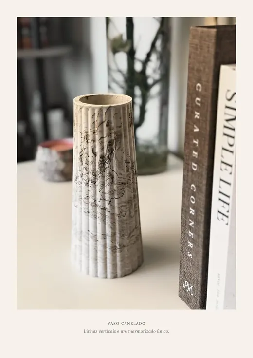
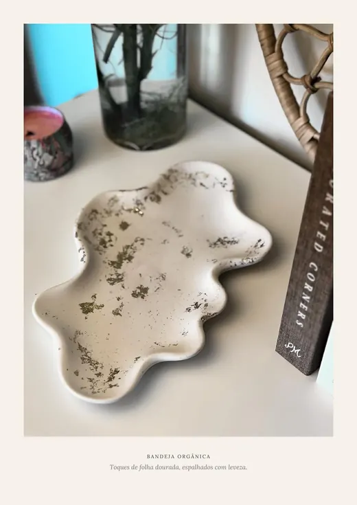
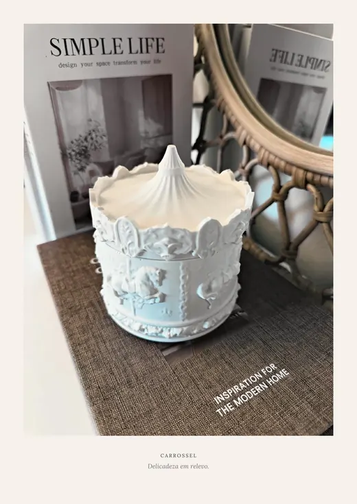
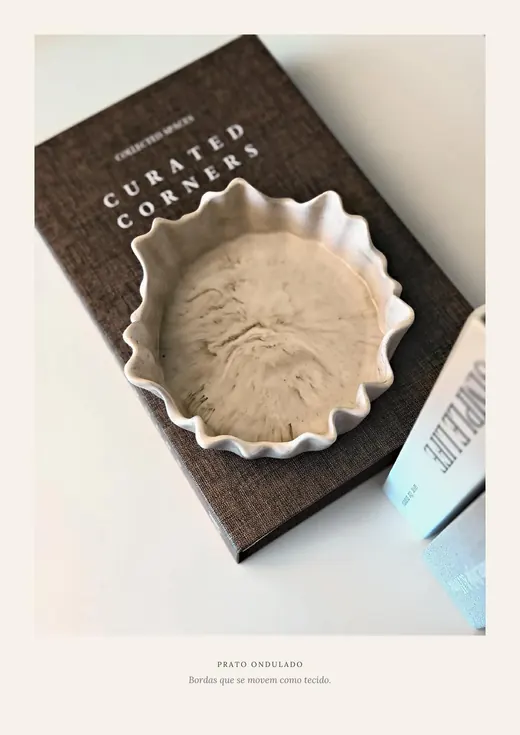
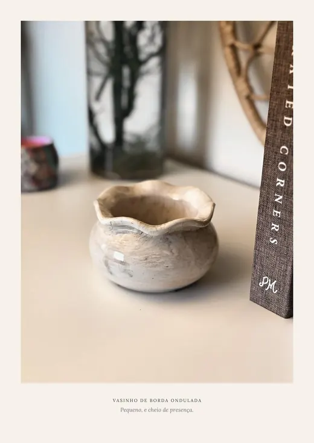
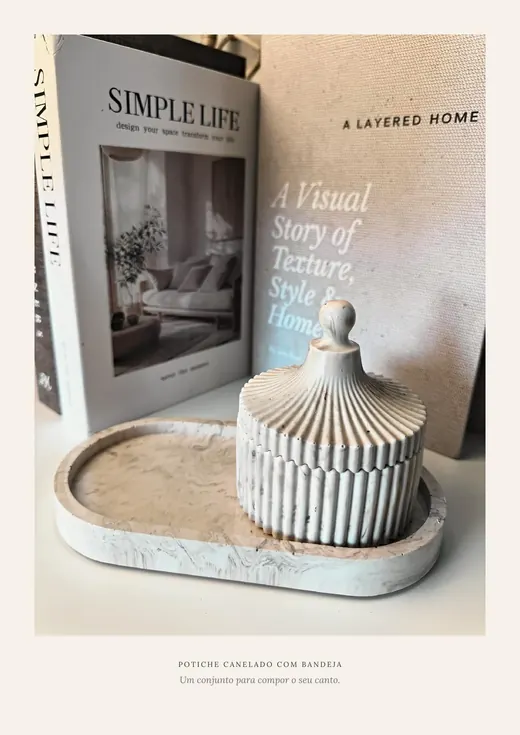
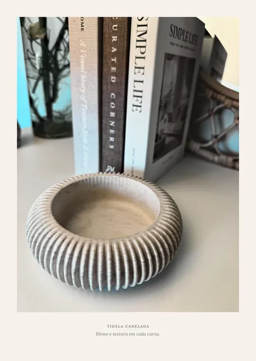
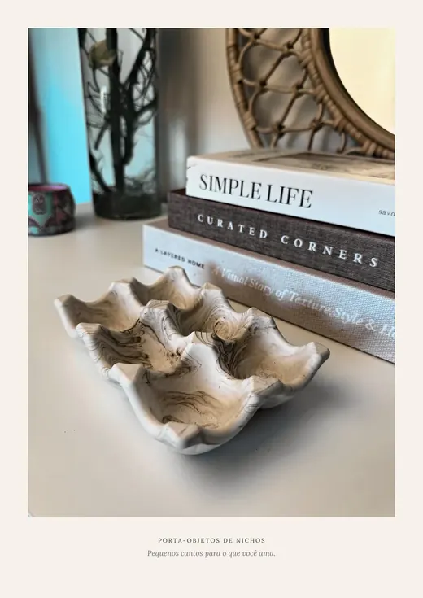

Casa · Corpo · Cabeça · Presença
Há coisas que se sentem
antes de se explicarem.
Escolhe pelo que queres sentir agora.
Produtos digitais
Também há coisas que não chegam numa caixa.
28 perguntas. Duas pessoas. O que ainda não perguntaste.
Ver o jogo → Produto digitalOráculo MAISON JF®Pensa na pergunta. Escolhe o território. Abre outra perspectiva.
Abrir o Oráculo → Biblioteca · ebooksPara ler e voltar.Histórias e livros para quando não queres uma resposta rápida.
Entrar na Biblioteca →Curadoria Maison
Coisas que pertencem ao meu universo.
Peças com carácter, escolhidas para viver contigo. Pequenas séries, acabamentos únicos e criações que nascem apenas por encomenda.
Curadoria em Destaque: A Floressência
As peças que vês aqui são criadas à mão por Jhonata, fundador d’A Floressência, e eu escolhi-as para fazerem parte da curadoria da Maison JF. Cada peça é feita individualmente, por isso pequenas variações fazem parte do seu carácter. São criadas sob encomenda e podem ser adquiridas através da Maison JF.







